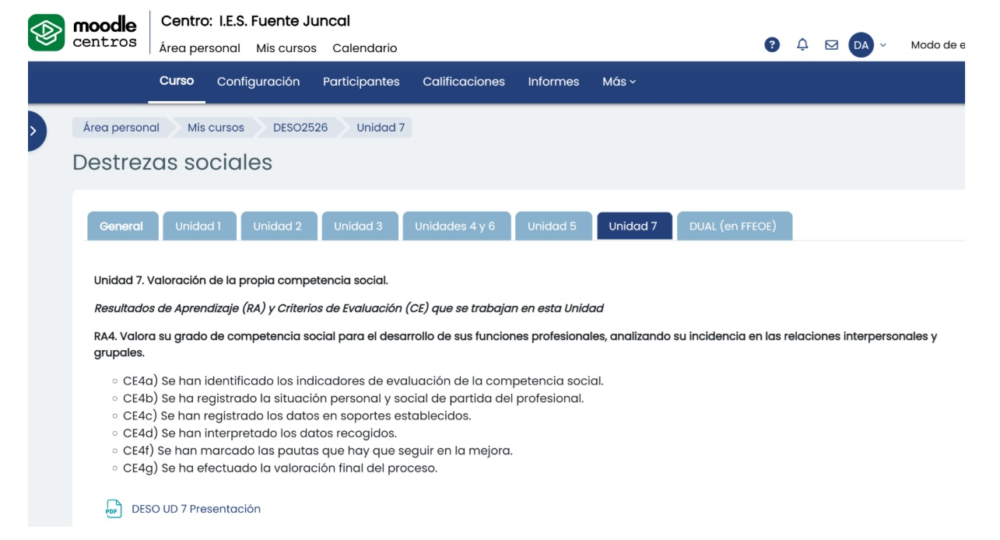

Texto
Vamos a realizar un proyecto con una unidad didáctica sobre la autovaloración de las competencias sociales de estudiantes del ciclo formativo de Grado Medio de Atención a Personas en Situación de Dependencia, en el módulo profesional de Destrezas Sociales (es la Unidad 7 del curso, con la que evalúamos el Resultado de Aprendizaje 4).
He seleccionado inicialmente tres herramientas digitales para vuestro producto final:
- 1) Formularios de Google (Google Forms) para realizar los test de autovaloración de una manera objetiva y ordenada.
- 2) La herramienta Canva para que publiquéis en una presentación vuestro balance final de competencias sociales y reflexioneis de manera creativa sobre lo que os ha aportado esta tarea de autoevaluación.
- 3) Moodle Centros para que encontréis instrucciones sobre la tarea, la rúbrica con la que seréis calificados y para que veáis la calificación y mis comentarios (feedback).

Creo que Formularios de Google ofrece cuestionarios claros, guiados e intuitivos, fáciles de completar. Permite recoger los resultados al instante y que los estudiantes veáis vuestro resultado nada más terminar. Me había planteado otras opciones. Podría hacerlo con Microsoft Forms, pero estáis más acostumbrados a usar herramientas de Google, las hemos usado en otras tareas. También podría haber elegido hacer los test dentro del propio Moodle, pero me gustaba la idea de generar rápidamente disponer de una tabla de datos en formato "tipo Excel" (XLSX) con los resultados y también gráficos. También he descartado herramientas tipo Socrative o Kahoot porque las veo más apropiadas para hacer algo de gamificación, que no es el objetivo de esta tarea.
Respecto a Canva, permite presentaciones visuales muy atractivas a partir de plantillas sencillas de usar. En otras tareas previas a esta he visto que los estudiantes del grupo os manejáis bien con Canva y os motiva, de hecho os "engancháis" rápidamente al proceso de crear una presentación o infografía. No tenéis por tanto que aprender una herramienta nueva, sino que trabajaréis ágilmente con ella. Además, Canva es muy versátil y os va a permitir introducir gráficos de resultados, iconos, textos breves, etc. Creo que con Canva vais a crear un producto final significativo. Podría haber elegido otras herramientas como Presentaciones de Google o Microsoft PowerPoint, pero Canva es más dinámico y también permite trabajar con una cuenta educativa de Google. Me gusta que con Canva podáis compartir su tarea tanto en PDF y como un enlace. Personalmente, me gusta también mucho Genial.ly, que ofrece opciones similares de uso, quien quiera puede hacer la tarea con Genial.ly, sin problemas o con otra herramienta similar que me propongáis.
Respecto a Moodle Centros, me parece una buena opción como "espacio oficial" para ofreceros instrucciones, la calificación y comentarios de retroalimentación (feedback). He probado otras herramientas como Google Classroom y Microsoft Teams, pero prefiero Moodle para la "gestión académica" porque es un entorno seguro y permite fácilmente gestionar los plazos en los que se admite la entrega, daros rápidamente una calificación con rúbricas integradas y ofreceros comentarios. Para mí, Moodle es una espacio "transparente" porque los estudiantes tenéis disponible la tarea, la rúbrica con la que vais a ser evaluados, mis comentarios y la nota final.
Tras las sugerencias de otro profesor, Antonio Cruz Macías, compañero del curso de Competencia Digital B2, añado una cuarta herramienta a vuestro producto final: PADLET. Crearé un mural de Padlet y en él vais a poder subir los enlaces a vuestros Canvas y también la versión en PDF.
Esta propuesta ha sido elaborada durante la Tarea 4.1. del curso COMPETENCIA DIGITAL B2 en marzo de 2026.